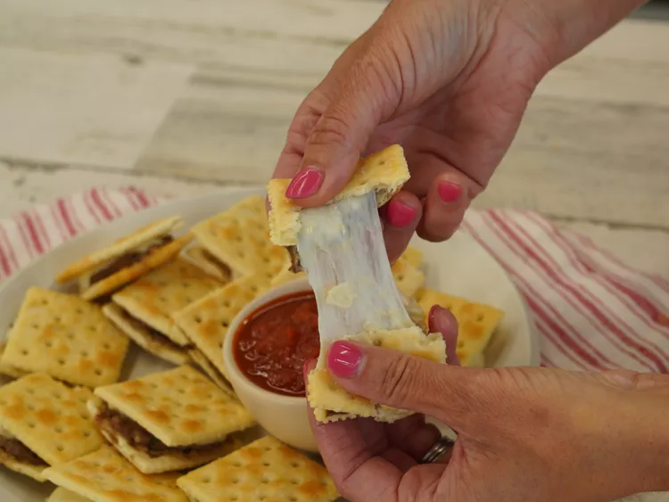

Magic Meatball Crackers

Description
Try these magic little meatball sliders served on toasty crackers. They are perfect crispy and salty bites of
gooey cheese and rich meatball flavor.
Ingredients
- 1/2 lb ground sirloin
- 2 tablespoons minced onion
- 1 clove garlic, minced
- 3 tablespoons mild or half and half
- 1 teaspoon kosher salt
- 1/2 teaspoon freshly ground black pepper
- 1 teaspoon dried basil
- 1/2 teaspoon dried oregano
- 1 large egg, lightly beaten
- 1/3 cup Italian seasoned breadcrumbs
- 48 saltine crackers
- 6 oz fresh mozzarella cheese, cut into 24 thin slices
- 1/4 cup olive oil
- 1/2 cup marinara sauce for serving, or as needed
Steps
- Preheat the oven to 325 degrees F (165 degrees C).
- Combine sirloin, onion, garlic, milk, salt, pepper, basil, oregano, and egg in a bowl and mix. Stir in
breadcrumbs until well combined. Spread meat mixture in a thin layer evenly on top of 24 crackers. Top with
a slice of mozzarella cheese and 2nd cracker.
- Place crackers on a baking sheet and brush the tops evenly with olive oil.
- Bake in the preheated oven until meat is golden brown around the edges and cooked through and cheese is
melted, 10 to 12 minutes.
- Serve with warm marinara sauce for dipping.
Main page